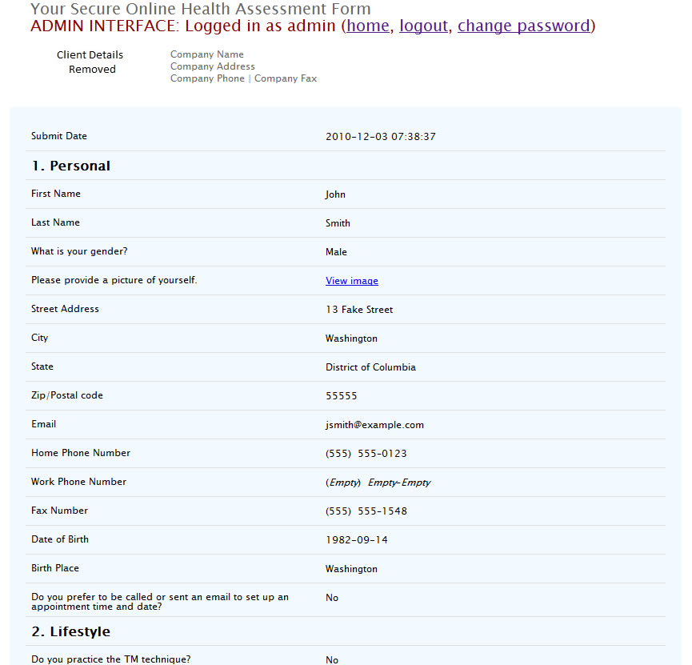

Scalable File Encoding
Rating: 10/10 avg over 2 related projects.
Feedback: Excellent work! Great job, I would work with Asht again in a heartbeat., Asht is a excellent worker! he made a few mistakes, but he always worked hard to make sure problems were corrected and everything was done to my expectations. I would absolutely work with Asht again.
Employer: diffuse via vWorker.com
Description
I developed for diffuse a PHP backend for an iPhone app which would allow people to upload raw picture and video files, have then catalogued in a large database with geographical and user metadata, and then converted into a variety of different formats and sizes for different purposes.
The iPhone app would post metadata and the uploaded file to a web server, which would validate the request and initially resolve the metadata, placing it in a database and uploading the file itself to Amazon S3.
The encoding servers would then take over, each downloading a raw file from S3, encoding it into different formats, then uploading those encodings to S3 again, where it could be accessed however the client wished.
Prominent features include:
- Scalability: As the structure diagram demonstrates, any number of encoding servers could be used to add additional processing power to the array with minimum disruption.
- An inexpensive toolchain: The encoding process for both pictures and video were powered by open source software (ImageMagick and ffmpeg respectively), acquired and run with zero cost.
- Cross-platform compatibility: With little modification, the backend could run on any platform supported by PHP, including Windows, Mac OS X and Linux.
- Easily extensible: with little modification, new encoding processes and logical steps can be added.
Gallery
Structure of the backend created
Verdic Health Assessment
Rating: 9.7/10 avg over 3 related projects.
Feedback: Very good communication, professional work., Performed work per specs, kept me updated, provided suggestions to improve project. Excellent work.
Employer: Level 270, LLC via vWorker.com
Description
The Verdic Health Assessment is an 11 page PHP web-application that asks a variety of questions, and records the answer's in a persistent database upon submission.
Prominent features include:
- Non-linear navigation (i.e. a user can go back to page 4 from page 7 to correct information if they wish) facilitated by a hyper-linked progress bar.
- Backend data validation with specific and useful error messages.
- Fluid and easy to use username/password based administrative interface.
- Easy extensibility on validation, page and individual form element levels.
- User sessions are remembered without prompting, meaning they can leave and resume their session for up to a day after starting.
Gallery*
First page, blank
First page, filled in, not submitted
First page, submitted, errors found
Viewing the first page after it has been submited
Second page, various possible field types
Sixth page, more possible field types
"I Agree" page example (client specific information removed)
Admin interface - home
Admin interface - viewing a record
Extensible Mail Merge
Rating: 10/10
Feedback: Fast, responsive, made unsolicited suggestions to improve my original RFP which were incorporated into the final product. Good, clean work. Hire him!
Employer: lownoisehighcontent via vWorker.com
Description
This web-based mail merge interface was designed specifically to be simple to use but also highly adaptable to a power user. An infinite number of merge templates can be including (or custom written on the spot) which can include any token (replacement value) that has been installed in the system.
These tokens are highly extensible; they can range from simply substituting a word or phrase, to looking up or calculating complex statistics or values. The tokens included in the client's solution could perform Google searches, look up Alexia rankings and website registration data, among other things.
Prominent features include:
- Extensibility: Tokens are provided by simple plugin code that can be added or removed at will.
- Clean interface: The solution is designed to be highly customisable, but still easy to use.
- Cross-platform: Because it is a web-application, the solution can be accessed from anywhere with any operating system.
Gallery
Step 1: Choosing a template and adding mail merge tokens
Step 2: Providing information required by tokens to complete their specific tasks
Step 3: Recieving processed and merged template, as well as any other token-specific messages
Web Design Questionnaire
Rating: 10/10
Feedback: Rock-solid work! Great communication, very knowledgeable and will consider Asht for all my future coding projects!
Employer: TEN STUDIOS via vWorker.com
Description
This solution was created for a web-design firm to record and validate the data received from the pages of a potential client questionnaire.
Prominent features include:
- Ability to save a form session to an email address, and have it persistently stored until recovered for continued filling-out.
- Frontend javascript based authentication, which provides immediate feedback of errors when submitting.
- Email-based format of results.
- Per-page extensibility.
Gallery
 Top of page 1
Bottom of page 1, blank
Javascript-based validation
Bottom of page 2, blank
Result of clicking save button
Navigating to ?restore
Result of submitting form
Top of page 1
Bottom of page 1, blank
Javascript-based validation
Bottom of page 2, blank
Result of clicking save button
Navigating to ?restore
Result of submitting form
Yellow Pages Scraper
Rating: 10/10
Feedback: Very professional job, extremely impressed with his work!
Employer: AshanPD via vWorker.com
Description
This scraper is designed to have a YellowPages.com url entered into it. Once started it will then navigate through all the pages in that result listing, saving the results into a large spreadsheet compatible file. It is a web-application, but it is running within a Windows program, allowing it to be used without suitable web hosting.
Prominent features include:
- Crash recovery: The scraper keeps a note of where in its scrape it is at all times, so if the program failes or crashes for any reason, when it is next run the option of resuming where the scraper stopped is presented.
- Cross-platform: While the program runs in a Windows environment, it can easily be ported to any platform, including the web, due to its use of the platform-independant programming language, PHP.
- CSV support: CSV, or Comma Seperated Values is the spreadsheet format output by the program. This format is supported by every mainstream spreadsheet program, thus not tying you into a specific platform.
Gallery
Starting interface
Job running
Job complete
Starting interface after the program closed with a running job
Job resume menu
Appointment Maker
Rating: 10/10
Feedback: EXCELLENT WORKER to work with. Very quick and easy to deal with.
Employer: SFVEGAS via vWorker.com
Description
This web-application was developed for a mattress collection service that the client provided. It allows a user to enter contact and pickup details, which are first validated, and are then passed onto the client via email. The From address is modified by the script, allowing the client to click Reply and confirm the appointment in a personalised manner.
Prominent features include:
- Backend validation: Only allows times and dates that the client wishes pickup to occur on, prevents past dates. Also limits service by ZIP code provided.
- Price calculation: User enters the amount of items being collected and the application informs the client of the estimated total price.
Gallery*
 1st Stage
Validation failure
2nd Stage (asking for pickup time)
Form submitted
1st Stage
Validation failure
2nd Stage (asking for pickup time)
Form submitted
Sustainability Assessment
Rating: 8/10
Feedback: Very good. Had a small problem using PayPal which caused the project to be delayed a few days. Apart from that, very quick and thorough. Will probably use again.
Employer: AEAaus via vWorker.com
Description
This form was designed to be embedded via iframe in a page of a Joomla! installation and instead of performing data storage itself, it actually interacts with an enterprise data storage web-application. It includes its own validation, but when submitted it generates a hidden HTML form that is submitted to the actual web application when the user clicks a second "Submit" button.
Prominent features include:
- Backend validation with field-based feedback.
- Integration with third-party content and data management systems.
Foreclosure Website
Rating: 10/10
Feedback: Probably the best coder we've worked with so far. Intelligent, responsive, patient and helpful in pointing out issues not previously considered.
Employer: reactiontm via vWorker.com
Description
I was in this instance requested by my client to migrate to a multimedia-based website which retaining their previous web design. In addition to this, I was asked to introduce HTTPS/SSL security, password authentication and a feedback dialog that appeared when the user attempted to leave the page.
The feedback mechanism was designed to write any responses to a text file with timestamp so that the client could access them easily from the website itself.
Prominent features include:
- Flash-based video presentations, with buffering and full-screen capabilities.
- Password-protected page, with flat-file authentication storage.
- Javascript/jQuery/jQueryUI based feedback dialog with flatfile feedback document.
Gallery*
Home page
When trying to leave
Filling out feedback form
Submitting feedback form